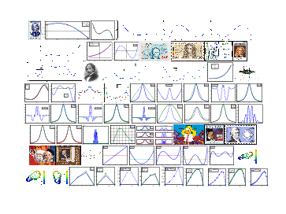

2324-MA378: Numerical Analysis II
All notes, scripts, and exercises on this page were prepared by Niall Madden for MA378 (Numerical Analysis 2) at University of Galway in the academic year 2023/2024.

All notes, scripts, and exercises on this page were prepared by Niall Madden for MA378 (Numerical Analysis 2) at University of Galway in the academic year 2023/2024.
PDF files for lecture slides will be posted here before class. The annotations link will work on the next working day after the class. If not, please send Niall a gentle reminder.
For labs, we'll use 'Octave'. I recommend that you access it through the Jupyter Server at https://cloudjupyter.universityofgalway.ie/. You should have received login credentials from Anthony Waters on Jan 23rd. If not, talk to Niall.